ST積み ST Stacking
概要
ST積みはSZミノを利用してTSDを狙います．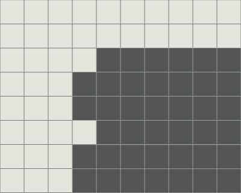
 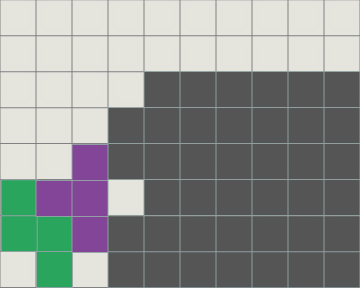
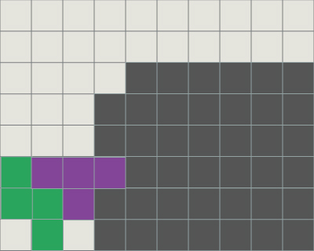
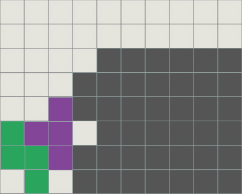
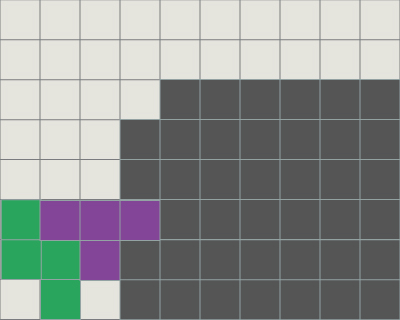 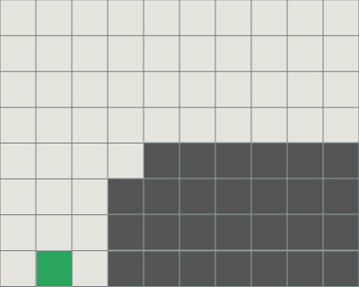 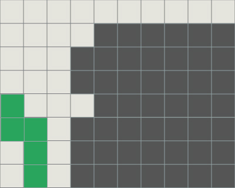 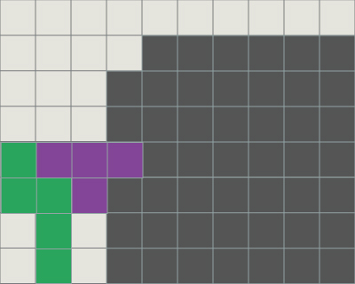 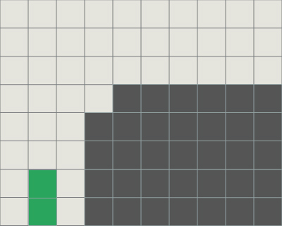
LT積み
LJミノを利用してST積みと同じことができます．
LST積み
SZ,LJミノを同じに使うこともできます．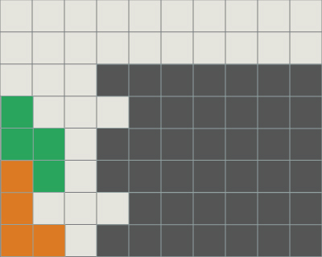
途中
実践では高さ，幅2のスペースがあれば可能です．
原理は平衡の技法とおなじです．
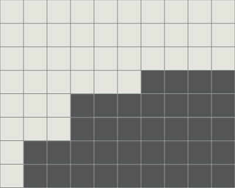
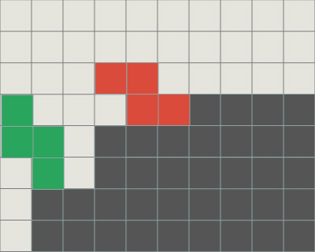
妥協
TSSで妥協する方法があります．
地形によってはこちらを選択してもよいでしょう．
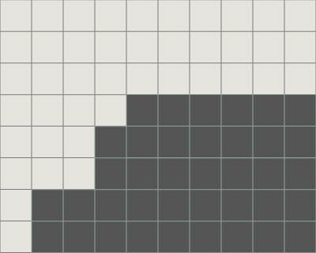

Oミノでも同じ役割が可能ですが，残る地形はよくありません．
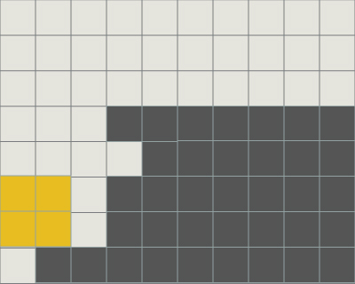
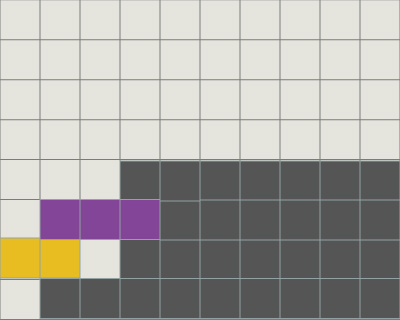
ちなみにこのとき，DT砲へ移行できます．
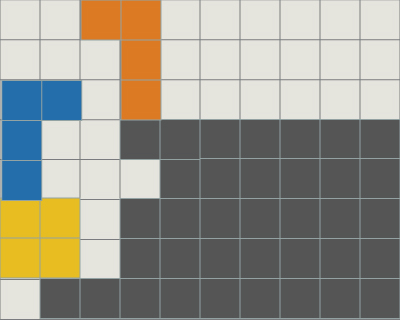
開幕
ST積みは開幕としても使えます．そこからきれいに積めば無限に繰り返すこともできます．
打後
打切り後はST積みを何度でも繰り返すことが可能です．ただし3度以上繰り返すと，Iミノをおおく要求します．
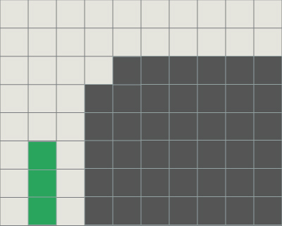
それを避けるためにLJミノでTSDを作ることも可能です．
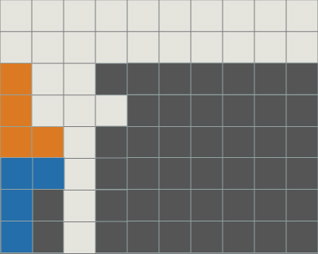 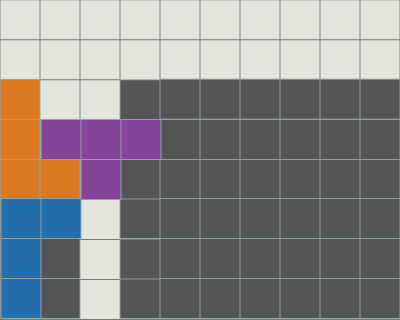 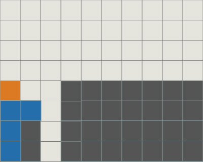 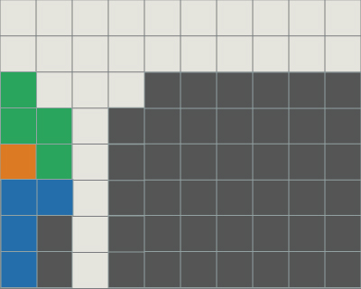
また，ひたすらST積みを繰り返すことは，特にスコアアタックなどで有用ですが，
その際の地形について考えてみると，屋根に当たる部分も繰り返しであることがわかります．
さまざまなパターンと見ることができますが，主要なものを2つ上げておきます．
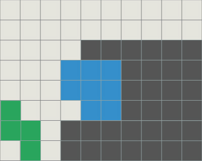
この水色部分のミノ組み合わせは以下の様なものが挙げられます．
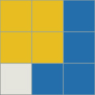 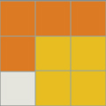 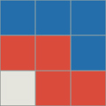 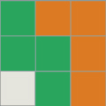
また，繰り返し部分の注目を変えてみると，以下のようにも取れます．
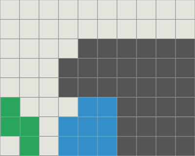
この水色部分のミノ組み合わせは以下の様なものが挙げられます．
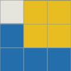 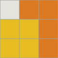 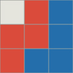 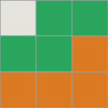
また，一度ST積みを行い，残った地形によってはTSTを打つことができます．
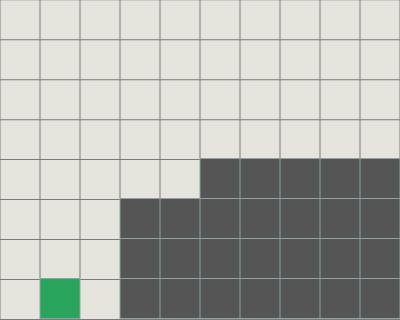 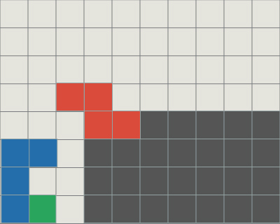